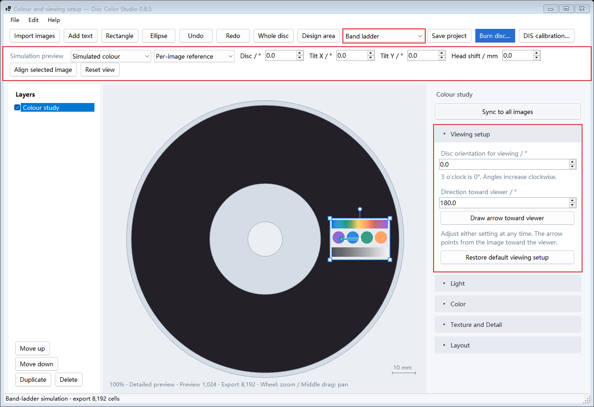

Band ladder trades color fidelity and brightness for a wider viewing-angle range. Choose Band ladder or Measured colour in the toolbar.

Select an image and expand Viewing setup. The two settings are independent. Edit either at any time, in any order.
| Setting | Meaning and control |
|---|---|
| Disc orientation for viewing | Clockwise rotation of the whole disc about its hub. The design canvas is the reference: its original 3 o’clock direction points right at 0°, down at 90°, left at 180°, and up at 270°. |
| Direction toward viewer | The direction from the image toward the viewer at the chosen disc orientation. Right is 0°, down 90°, left 180°, and up 270°. Enter a value or choose Draw arrow toward viewer and drag inside the image. |
The canvas keeps the design layout, with the arrow transformed back to canvas coordinates. Changing disc orientation keeps the viewer-direction value fixed and rotates the displayed arrow accordingly. Dragging the arrow changes only the viewer direction.
Release to update predicted colour. Drag the end handle to adjust again; Shift snaps to 15°, and Esc cancels the gesture. Restore default viewing setup uses the original reference pose: image at the disc’s right side and viewing point above the hub.
Each image stores its own setup. Moving or resizing the image recalculates its recipe. Layout → Rotation rotates the artwork. Save the .discolor project to retain both viewing settings.
The right-hand viewing settings control predicted colour and the recipe encoded on disc. The top Simulation preview controls examine that fixed recipe while rotating or tilting the disc and moving the viewer sideways.
Per-image reference shows each image’s own design view. Shared disc pose uses one scene for the disc; Align selected image copies that image’s scene into shared simulation. Compare Simulated colour with Adjusted source.
Light provides exposure, brightness and contrast. Color provides master and eight-channel HSL. Texture & detail provides View balance and sampling precision. Lower View balance favours the centre view. Export uses each image’s selected grid. Sync copies light, colour and texture adjustments; each image retains its own viewing setup.
Disc orientation rotates image positions and track directions into the viewing scene. Viewer direction sets the observer relative to the image. Transforming the light and eyes back into disc coordinates gives the local diffraction parameter used to fit the three-band ladder mixture. Preview and encoding share this calculation.
α = clockwise disc rotation, β = viewer azimuth p_world = Rz(−α) p_disc E_world = p_world + (r cosβ, −r sinβ, h) E_disc = Rz(α) E_world, L_disc = Rz(α) L_world u(p) = |t(p) · [unit(E_disc−p) + unit(L_disc−p)]| λ = u · period(T) · 133.3 nm
Optical Y points up and Z is normal to the disc. The model retains its reference lamp and 500 mm viewing height; lateral viewing distance is the image-centre radius. Projects use format v8. Older projects retain their original viewing model until their viewing setup is explicitly edited.